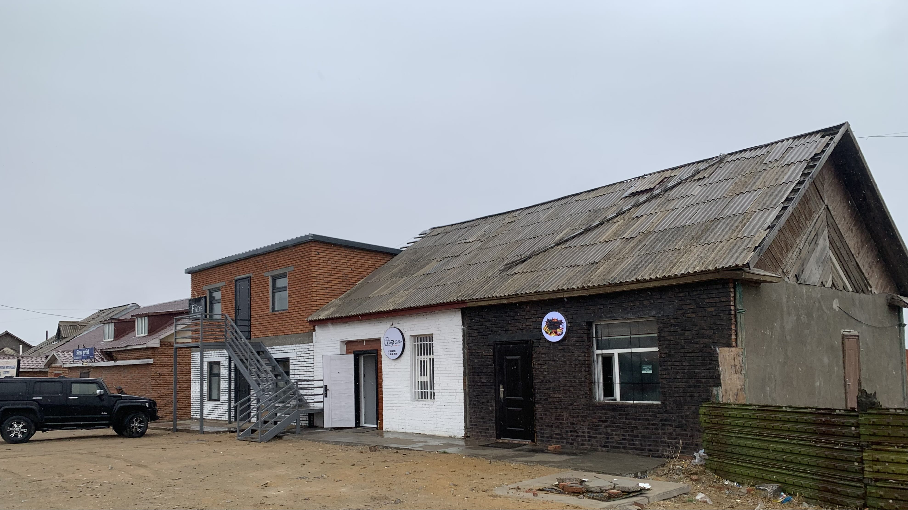
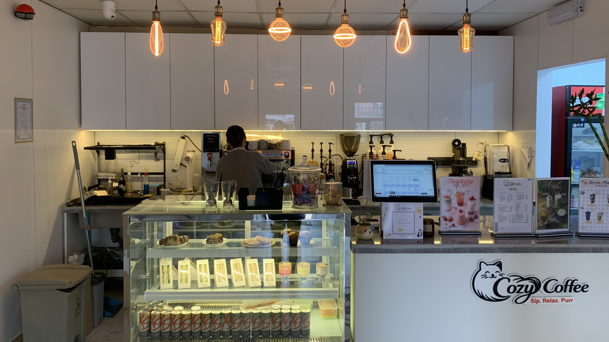
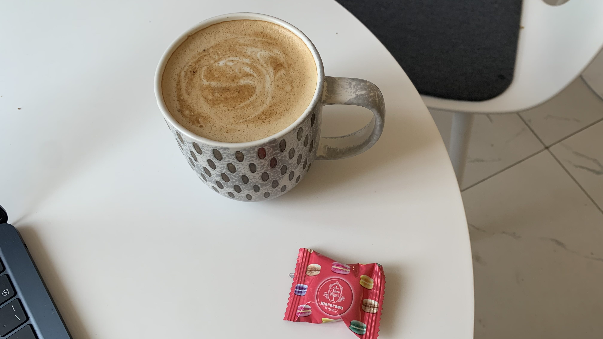
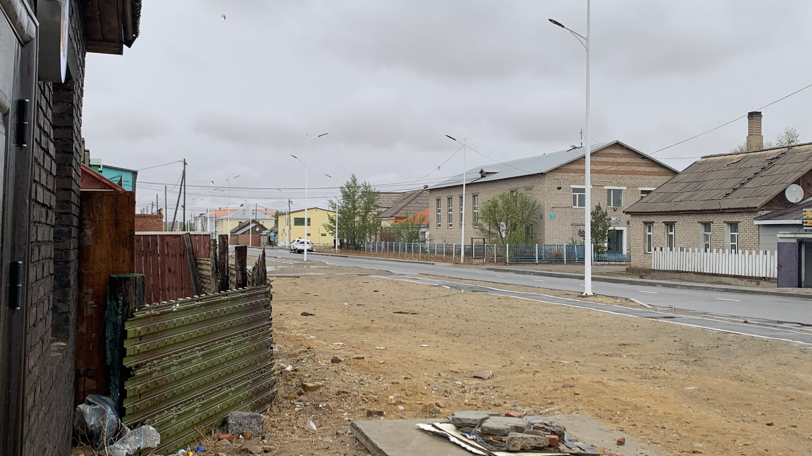
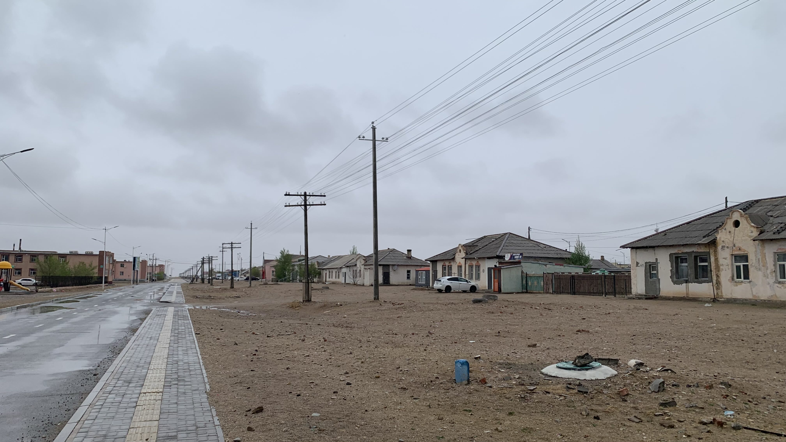
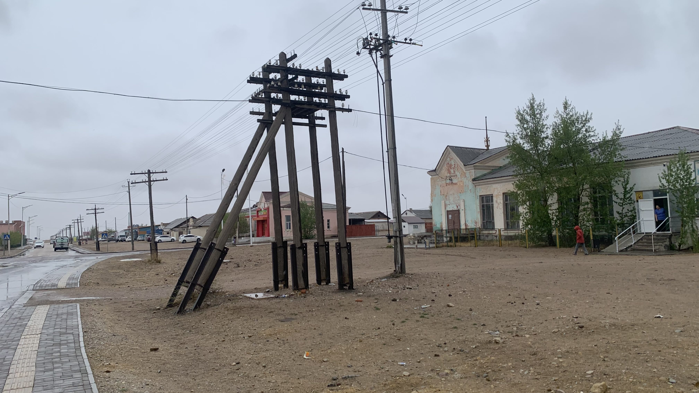
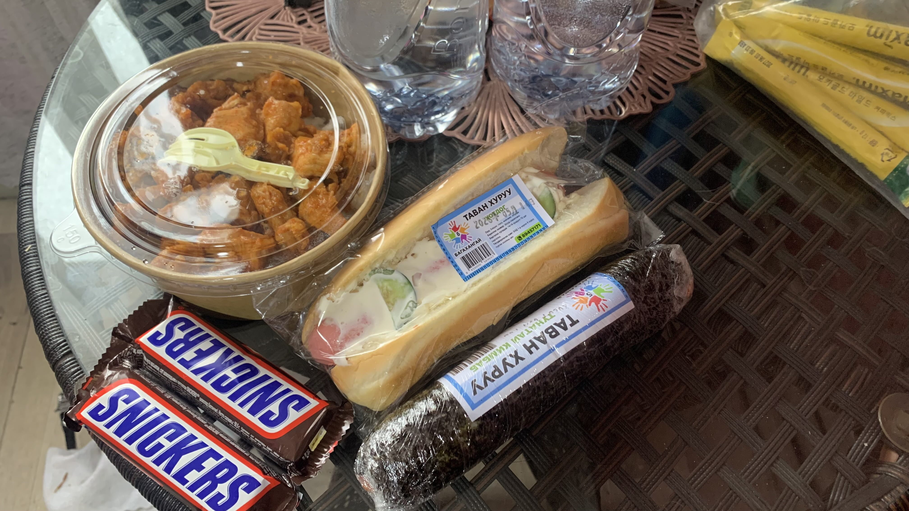

k-Day 071｜塔可夫斯基
起床後冷到發抖，飯店的水溫只比人體溫度高出0.5度，既然有如此精良的控溫技術，為何不將此科技延伸到升溫的效率呢？

昨天走在路上，一直覺得這裡的建築似曾相識，想再出門看看。找了一間附近的咖啡廳，簡介上寫著除了咖啡之外還會舉辦社區活動，似乎是不錯的地點。這三棟磚房很酷，最左邊是理髮店，中間是咖啡，右邊黑色的則是Pizza店。

咖啡店內裝走白色現代路線。

點了一杯拿鐵坐到窗邊的位置，附贈一個餅乾馬卡龍。

站在屋簷下看著雨，這幾天的熟悉感突然具體了起來。這裡一直讓我想起塔可夫斯基的世界。

不是俄羅斯這麼簡單，波蘭就沒有給我這種感覺。

是因為建築還是下雨還是外露的木材磚瓦被雨水浸濕的狀態，還是那種人造物在灰藍色天空與土黃色戈壁之間被時間和世界遺忘的感覺，又或者是沒有表情的人？實在不太確定。

昨晚看到旅店對面的超市有熟食櫃，買了韓式炸雞便當、飯卷和熱狗堡，以及明天的熱量與飲水。
今日花費： 晚餐 31400、咖啡 10000、住宿 80000元